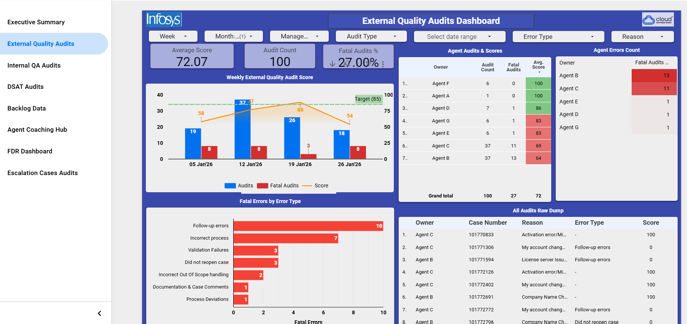
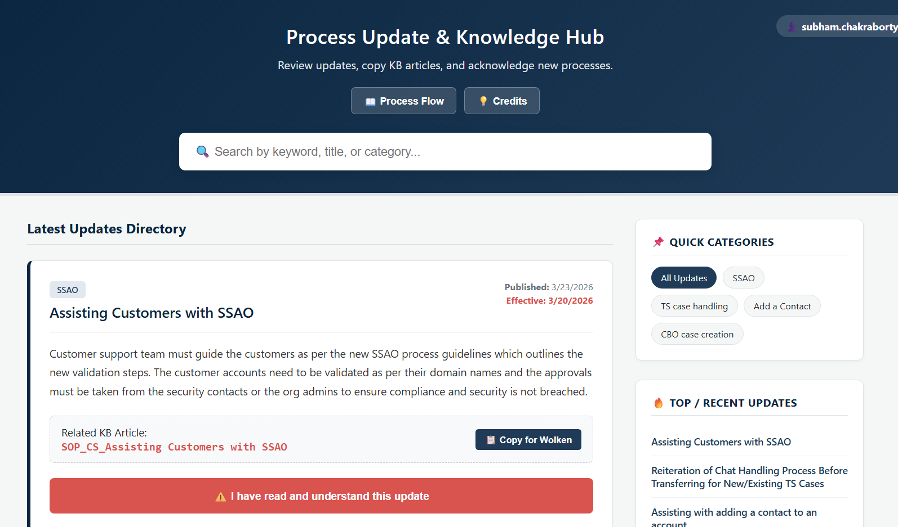
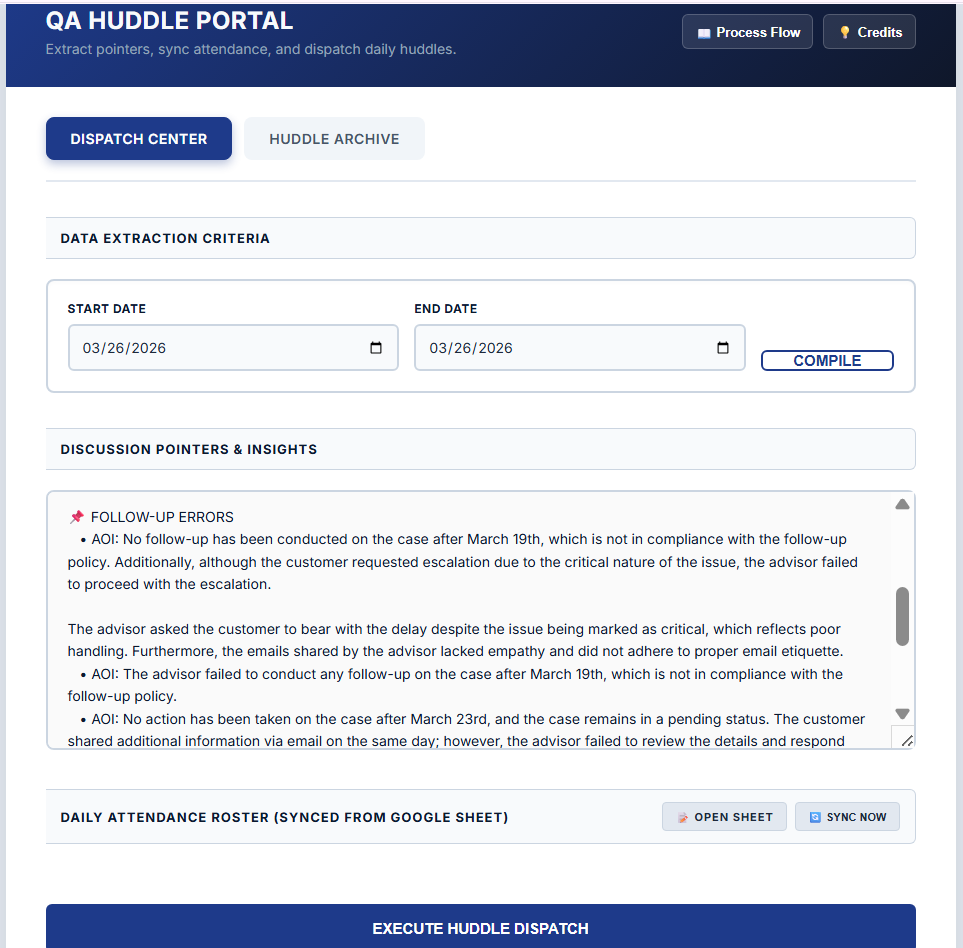
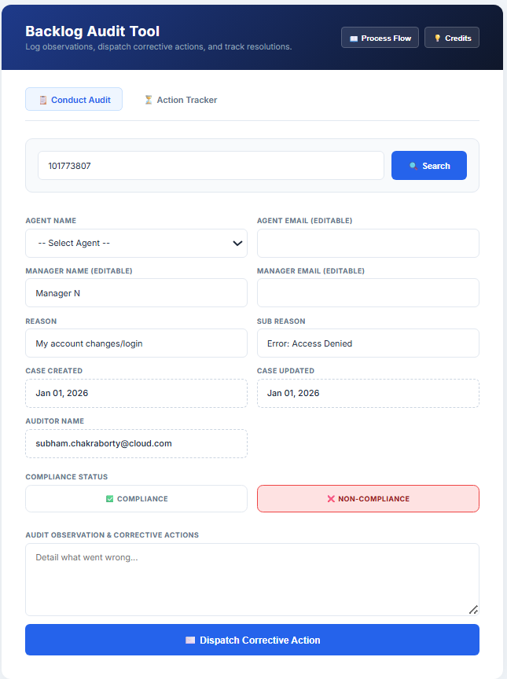

Technical Expertise
Engineering & Logic
- JavaScript (ES6+)
- Google Apps Script (GAS)
- HTML5 & CSS3
- API Integrations
Data & Intelligence
- Looker Studio (BI)
- Data Extraction & Parsing
- ETL Pipeline Construction
- Real-time Visualization
Operations Strategy
- Workflow Automation
- SLA Enforcement Systems
- UI/UX for Internal Tools
- Quality Assurance Governance
The Automation Portfolio

01 | CSG Command Center
Measurable Impact
Provides leadership with "Anytime, Anywhere" drill-down visibility into floor-level metrics.
Challenge: Data was siloed across spreadsheets, causing reporting latency and missed coaching opportunities.
Solution: Engineered an enterprise Looker Studio BI dashboard aggregating thousands of automated backend data points.

02 | Knowledge Hub
Measurable Impact
Ensures 100% floor-wide visibility of process changes with timestamped digital audit trails.
Challenge: Critical updates were lost in emails, allowing agents to claim ignorance and driving severe quality errors.
Solution: Built a mandatory web portal where agents must securely log in to read and digitally "Acknowledge" updates.

03 | Huddle Dispatcher
Measurable Impact
Recaptures QA prep time and allows absent agents to self-serve missed huddle insights.
Challenge: Manual prep was tedious, and agents absent during huddles repeatedly missed critical performance insights.
Solution: An automated portal that compiles targeted errors, syncs attendance, and archives summaries digitally.

04 | SLA Tracker
Measurable Impact
Drives down backlog volume and aging by ensuring "One-Touch" rapid corrections.
Challenge: Aging backlog cases lacked immediate accountability and strict timelines for agent corrections.
Solution: A closed-loop app that dispatches actions directly to agents and enforces a strict 5-hour resolution SLA.

05 | Governance Alerts
Measurable Impact
Enforces a strict 48-Hour Acknowledgment SLA without manual QA intervention.
Challenge: Chasing feedback acknowledgments relied on human memory, causing severe delays in coaching.
Solution: Server-side triggers that autonomously dispatch emails and escalate to leadership if ignored past 48 hours.

06 | Data Parsers
Measurable Impact
Eliminates calculation errors and enables "Golden Hour" service recovery for DSATs.
Challenge: QA wasted 60 mins daily mapping rosters and calculating complex FDR/TDR and DSAT metrics manually.
Solution: An extraction engine that scans logs/emails, maps data, and writes to the master database instantly.